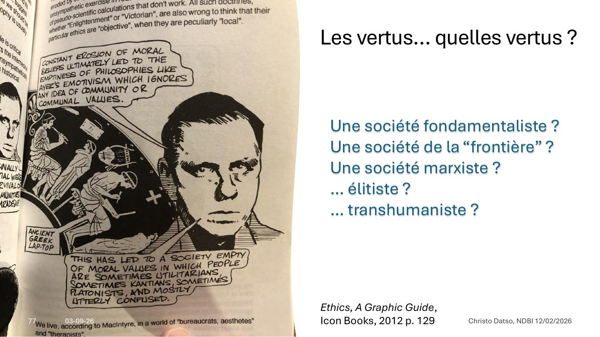

DIAPOSITIVES 73 à 86
Quatorze diapositives d’annexe : où aller chercher, et chez qui.
The London School of Economics and Political Science — AI Ethics, cours en ligne de trois semaines, « Lead Ethically in the Age of AI » :
Le programme sur le site de la LSE.
L’ouvrage annoncé en fiche 9. Paru en 1981, salué comme une critique majeure de la philosophie morale contemporaine ; traduit en plus de quinze langues.
MacIntyre y examine les racines historiques et conceptuelles de l’idée de vertu, analyse les raisons de son absence dans la vie personnelle et publique, et propose une piste pour sa réappropriation. Les points principaux, tels que l’orateur les relève :
Dans le prologue de la troisième édition, vingt-cinq ans plus tard, MacIntyre conclut qu’il n’a « encore trouvé aucune raison d’abandonner les principaux arguments » du livre : seul le point de vue d’une tradition « dont les croyances et les présuppositions ont été formulées dans leur forme classique par Aristote » permet de comprendre « la genèse et le dilemme de la modernité morale ».

Et la question que MacIntyre laisse ouverte : une société fondamentaliste ? de la « frontière » ? marxiste ? élitiste ? transhumaniste ? Aucune vertu ne se définit hors d’une communauté qui la porte — d’où la difficulté : quelle communauté ?
L’exposé en tire une hypothèse historique :
« L’impossibilité de répondre à cette question explique pourquoi nous avons vu émerger, à partir du dernier quart du vingtième siècle, des “éthiques” spéciales, focalisées : »
Le raisonnement est élégant et il replace tout l’exposé dans une série : l’éthique de l’IA n’est pas une nouveauté absolue, c’est la dernière-née d’une famille d’éthiques sectorielles nées de l’incapacité à s’entendre sur une vertu commune. Ce qui explique aussi pourquoi elle bute sur les mêmes désaccords que les autres.
Et l’exposé propose une raison minimale d’espérer :
« The biggest threat to our survival is now ourselves. We can destroy ourselves and our planet quite easily with a combination of ignorant selfishness and lethal technology. » Ethics, A Graphic Guide, p. 173.
« En ce deuxième quart du vingt-et-unième siècle qui commence, le “retour de la Vertu” tient peut-être simplement à cette prise de conscience minimale. »
« Le Droit est en pointe sur les questions d’usage de l’IA, mais l’évolution de l’IA est tellement rapide que des évaluations de risques posées en 2020 (le livre d’Yves Poullet) doivent être revues et complétées » — par celui de Manuela Cadelli en 2025.
« Les capacités offertes dès maintenant par l’IA justifient l’interrogation de nos sociétés sur les limites à imposer aux concepteurs et exploitants publics et privés de systèmes d’intelligence artificielle au nom des valeurs éthiques essentielles et universelles que sont la dignité, l’autonomie et la justice sociale. » Yves Poullet, Le RGPD face aux défis de l’intelligence artificielle, Larcier, 2020, p. 8.
Université de Namur — DTIC, droit des technologies de l’information et de la communication. 60 crédits, dont un stage et un travail de fin d’études au Namur Legal Lab.
| Cours | Heures | Crédits |
|---|---|---|
| Criminalité informatique | 15 | 2 |
| Droit des médias | 15 | 2 |
| Online platforms | 15 | 2 |
| Droit et technologie : données et intelligence artificielle | 30 | 3 |
| Droit des communications électroniques | 15 | 2 |
| Vie privée et protection des données | 30 | 4 |
| Droit du commerce électronique | 45 | 6 |
| Gouvernance d’internet et e-gouvernement | 30 | 4 |
| Propriété intellectuelle et société de l’information | 30 | 4 |
| Economics of digital regulation | 30 | 3 |
| European competition law in the information society | 30 | 4 |
| Systèmes d’information : méthodes et technologies | 75 | 7 |
| Séminaire résidentiel : régulation et société de l’information | 15 | 2 |
| Stage et travail de fin d’études — Namur Legal Lab | — | 15 |
Quelques questions du programme, telles que la diapositive les affiche : « Comment allier les progrès de l’intelligence artificielle et la défense de nos libertés fondamentales ? » — « Comment contrôler les algorithmes ? » — « Un email ou un SMS peut-il servir de preuve ? » — « ChatGPT heurte-t-il le droit d’auteur ? » — « Numérisation rime-t-il avec discrimination ? » — « La numérisation met-elle en péril l’accès aux pouvoirs publics pour les personnes précarisées ? »
Un ouvrage collectif (Élise Degrave, Florian Jacques, Julie Mont, Aline Nardi) — ChatGPT est-il un hors-la-loi ? — construit sur cinq questions :
Diederick Legrain, consultant et formateur en intelligence artificielle appliquée : « J’accompagne les organisations — PME, institutions publiques, santé, enseignement — à transformer concrètement leurs métiers grâce à l’IA générative. » Trois axes : spécialiste des usages réels (copilotes, workflows, RAG, automatisation), approche terrain (outils, gouvernance, risques, adoption opérationnelle), enseignant (enseignement supérieur, HEPN).
Offre citée : sensibilisation et découverte de l’IA, formation de groupe à ChatGPT, masterclass « l’IA collaborative », réglementation et charte interne IA, création d’assistants IA sur mesure, l’IA pour le marketing et la communication.
Et un outil, avec son code QR sur la diapositive : SuperPrompter, pour « améliorer vos requêtes IA ».